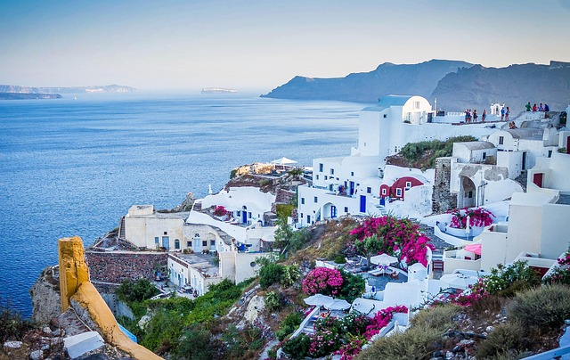

Nos Destinations Préférées
Italie


L'Italie est un pays situé dans le sud de l'Europe, avec une partie continentale et une partie insulaire composée de la Sicile et de la Sardaigne. Sa capitale est Rome, qui est également le berceau de l'Empire romain. Le pays est connu pour sa richesse historique et culturelle, notamment la Renaissance, qui a débuté au XVe siècle en Toscane.
L'Italie est divisée en 20 régions, chacune ayant sa propre spécialité culinaire et culturelle. Parmi les régions célèbres, on trouve la Toscane, la Vénétie, la Campanie et la Sicile. La langue officielle est l'italien.
Le pays est également célèbre pour ses sites touristiques, comme la Côte Amalfitaine, les Cinque Terre, Florence, Naples, Pompéi, Rome, la Sicile, Venise et Vérone. L'Italie a été fondée en 1861 après l'unification menée par Cavour et Garibaldi. Avant cela, le territoire était divisé en plusieurs états indépendants.
En termes de gastronomie, l'Italie est reconnue pour ses pizzas, ses pâtes et ses desserts comme le tiramisu, mais elle offre une grande variété de plats régionaux.
L'Italie est également un pays de l'art, avec de nombreux musées et galeries d'art, notamment le Vatican qui abrite plus de 100 galeries d'art et la célèbre chapelle Sixtine peinte par Michel-Ange.
Pour une visite réussie, il est recommandé de respecter les traditions locales, comme les horaires des restaurants qui peuvent varier selon les régions.
Inde

L'Inde est un pays fascinant avec de nombreuses particularités à connaître avant de partir en voyage. Voici quelques points importants :
Population et langues : L'Inde est le pays le plus peuplé du monde avec plus de 1,4 milliard d'habitants. Elle compte 22 langues officielles, dont le hindi et l'anglais.
Monnaie : La monnaie officielle est la roupie indienne (INR). Le taux de change est d'environ 1 euro pour 90 INR, mais il peut varier.
Climat : L'Inde a un climat tropical, avec des températures élevées et une humidité importante. La meilleure période pour visiter le pays est d'octobre à mai, bien que les températures puissent être insupportables de mars jusqu'au début de la mousson.
Transport : Le réseau ferroviaire indien est l'un des plus étendus au monde, avec plus de 67 000 km de voies. Les trains sont un moyen de transport populaire et économique, mais il est conseillé de réserver à l'avance, surtout pour les trajets longue distance.
Visas : Un visa est obligatoire pour entrer en Inde, et il est recommandé de le demander en ligne avant le départ. Le visa électronique est disponible pour les séjours touristiques de 30 jours maximum.
Vaccins : Il est conseillé de se faire vacciner contre certaines maladies tropicales avant de partir, comme l'hépatite A et B, la typhoïde et la rage.
Religion : Le pays est majoritairement hindou, avec près de 80 % de la population. L'hindouisme est une religion ancienne, dont les origines remontent à plus de 4 000 ans. Alimentation : Le végétarisme est courant en raison des règles alimentaires de plusieurs religions pratiquées en Inde. Les vaches sont sacrées et ne doivent pas être touchées.
Culture : L'Inde est riche en traditions et en festivals, comme Diwali, la fête des lumières, et Holi, la fête des couleurs. La musique et la danse sont également des éléments importants de la culture indienne, avec des styles variés selon les régions.
Tourisme : L'Inde est une destination touristique populaire, avec des sites emblématiques comme le Taj Mahal, le Fort Rouge à Delhi et les temples de Khajuraho. Voici quelques conseils pour les voyageurs : Respectez les coutumes locales, comme enlever vos chaussures avant d'entrer dans un temple ou une maison. Évitez de prendre des photos de personnes sans leur permission, surtout dans les zones rurales. Soyez prudent avec la nourriture de rue et buvez de l'eau en bouteille pour éviter les problèmes de santé.
Autriche


Voici quelques informations importantes à connaître avant de voyager en Autriche :
Langue : L'allemand est la langue officielle de l'Autriche, mais l'anglais est largement compris, surtout dans les zones touristiques. Monnaie : L'Autriche utilise l'euro (€) comme monnaie officielle depuis 2002.
Climat : L'Autriche a un climat continental, avec des hivers froids et des étés chauds. La meilleure période pour visiter le pays est de mai à septembre, mais les mois d'hiver sont également populaires pour les sports d'hiver.
Transport : L'Autriche dispose d'un excellent réseau de transports en commun, y compris des trains, des bus et des tramways. Les trains sont particulièrement efficaces et relient les principales villes du pays. Il est recommandé d'acheter un pass de transport pour économiser sur les trajets.
Visas : Les citoyens de l'Union européenne n'ont pas besoin de visa pour entrer en Autriche. Les voyageurs d'autres pays doivent vérifier les exigences de visa avant de partir. Vaccins : Il n'y a pas de vaccins obligatoires pour entrer en Autriche, mais il est recommandé d'être à jour sur les vaccins de base comme la diphtérie, le tétanos et la poliomyélite.
Culture : L'Autriche est connue pour sa riche culture musicale, avec des compositeurs célèbres comme Mozart, Beethoven et Strauss. Le pays est également célèbre pour ses châteaux, ses musées et ses festivals de musique. Ne manquez pas de goûter à la cuisine autrichienne, qui comprend des plats comme le schnitzel, le strudel aux pommes et le Sachertorte.
Tourisme : L'Autriche est une destination touristique populaire, avec des sites emblématiques comme Vienne, Salzbourg, Innsbruck et le Tyrol. Les Alpes autrichiennes offrent également de nombreuses possibilités pour les sports d'hiver et la randonnée. Voici quelques conseils pour les voyageurs : - Respectez les coutumes locales, comme enlever vos chaussures avant d'entrer dans une maison. - Essayez de parler quelques mots d'allemand, même si l'anglais est largement compris. - Soyez conscient des règles de circulation, surtout si vous conduisez en Autriche.
Alpes


Les Alpes sont un système montagneux important en Europe, s'étendant sur plus de 1 200 km entre le golfe de Gênes et la plaine pannonienne. Elles sont partagées entre plusieurs pays, notamment l'Autriche, l'Italie, la France, la Suisse, l'Allemagne, la Slovénie, le Liechtenstein et Monaco.
Les Alpes sont la plus haute chaîne de montagnes d'Europe, avec une altitude moyenne de 2 000 mètres. Elles sont le résultat de la collision des plaques tectoniques Eurasie et Afrique, qui a commencé il y a environ 50 millions d'années. Les Alpes sont composées de roches magmatiques, métamorphiques et sédimentaires, et sont divisées en trois parties principales : les Alpes occidentales, les Alpes centrales et les Alpes orientales.
Le climat des Alpes varie en fonction de l'altitude et de la latitude, avec des hivers froids et des étés frais. Les Alpes sont également connues pour leurs glaciers, qui sont en recul en raison du réchauffement climatique. Les Alpes abritent de nombreux lacs, rivières et vallées, offrant des paysages spectaculaires.
Les Alpes sont une destination touristique populaire, attirant des millions de visiteurs chaque année pour des activités telles que le ski, la randonnée, l'escalade et le VTT. Les villes alpines comme Annecy, Evian, Aix-les-Bains, Chamonix, Courchevel, Megève, Les 2 Alpes et Val Thorens sont particulièrement prisées. Le Mont Blanc, le plus haut sommet des Alpes, atteint 4 806 mètres d'altitude et est un lieu emblématique pour les alpinistes.
Les Alpes font face à des défis environnementaux et socio-économiques, notamment le réchauffement climatique, la pollution et le tourisme de masse. Pour répondre à ces défis, des conventions internationales ont été mises en place, comme la Convention sur la protection des Alpes, dite Convention alpine. Cette convention vise à protéger l'environnement alpin et à promouvoir un développement durable dans la région.
Voici quelques points clés à retenir sur les Alpes : Les Alpes sont la plus haute chaîne de montagnes d'Europe, s'étendant sur plus de 1 200 km. Elles sont partagées entre plusieurs pays : Autriche, Italie, France, Suisse, Allemagne, Slovénie, Liechtenstein et Monaco. La chaîne est divisée en trois parties principales : Alpes occidentales, Alpes centrales et Alpes orientales. Le climat varie selon l'altitude et la latitude, avec des hivers froids et des étés frais.
Grèce


Voici quelques informations importantes à connaître sur la Grèce : La Grèce est un pays situé dans le sud-est de l'Europe, connu pour sa riche histoire et sa culture. La langue officielle est le grec, mais l'anglais est largement compris dans les zones touristiques. La monnaie officielle est l'euro, introduit en 2002.
Le pays est composé de la Grèce continentale et de nombreuses îles, dont les plus célèbres sont la Crète, Rhodes, Corfou et Santorin. La Grèce a un climat méditerranéen, avec des étés chauds et secs et des hivers doux et humides. Les mois de mai à octobre sont les meilleurs pour visiter le pays, bien que les îles soient populaires toute l'année. Le transport en Grèce est bien développé, avec des bus, des ferries et des vols intérieurs reliant les îles.
Les sites touristiques les plus populaires incluent l'Acropole d'Athènes, le palais de Knossos en Crète, les Météores et les îles des Cyclades. Les voyageurs doivent être conscients des coutumes locales, comme le fait de ne pas porter de chaussures à l'intérieur des maisons et de respecter les règles de politesse dans les églises.
La cuisine grecque est célèbre pour ses plats à base d'huile d'olive, de légumes frais, de fruits de mer et de viandes grillées. Les plats typiques incluent la moussaka, le souvlaki, la salade grecque et les baklavas.
Japon


Le Japon est un pays situé dans l'Est de l'Asie, connu pour sa culture unique et innovante. Voici quelques informations importantes à connaître : Superficie : Le Japon est un archipel composé de quatre îles principales (Honshu, Hokkaido, Kyushu et Shikoku) et de nombreuses îles plus petites, avec une superficie totale d'environ 377 975 km².
Population : En 2021, la population du Japon est d'environ 125 millions d'habitants, avec une densité de population de 334 habitants par km².
Histoire : Le Japon a une histoire riche et complexe, avec des influences chinoises et coréennes. Il a été un empire jusqu'en 1947, date à laquelle il est devenu une démocratie parlementaire.
Géographie : Le pays est montagneux, avec des volcans actifs comme le Mont Fuji, et est situé dans une zone sismique, ce qui le rend sujet aux tremblements de terre.
Religion : Le shintoïsme et le bouddhisme sont les deux principales religions du Japon, avec des temples et des sanctuaires présents dans tout le pays.
Culture : La culture japonaise est riche et variée, avec des traditions telles que la cérémonie du thé, les arts martiaux, la calligraphie et la cuisine.
Gastronomie : La cuisine japonaise est célèbre pour ses sushis, sashimis, ramen et tempura. Le pays est également connu pour ses boissons comme le thé vert et le saké.